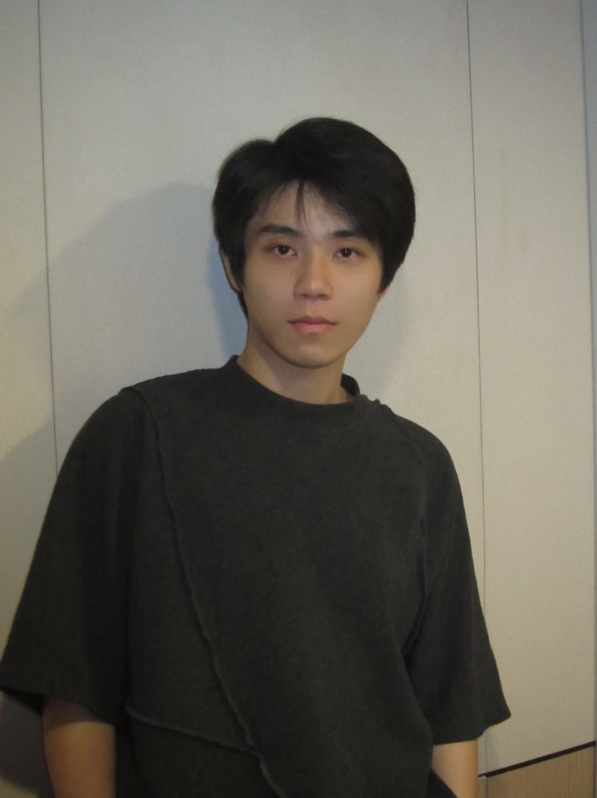
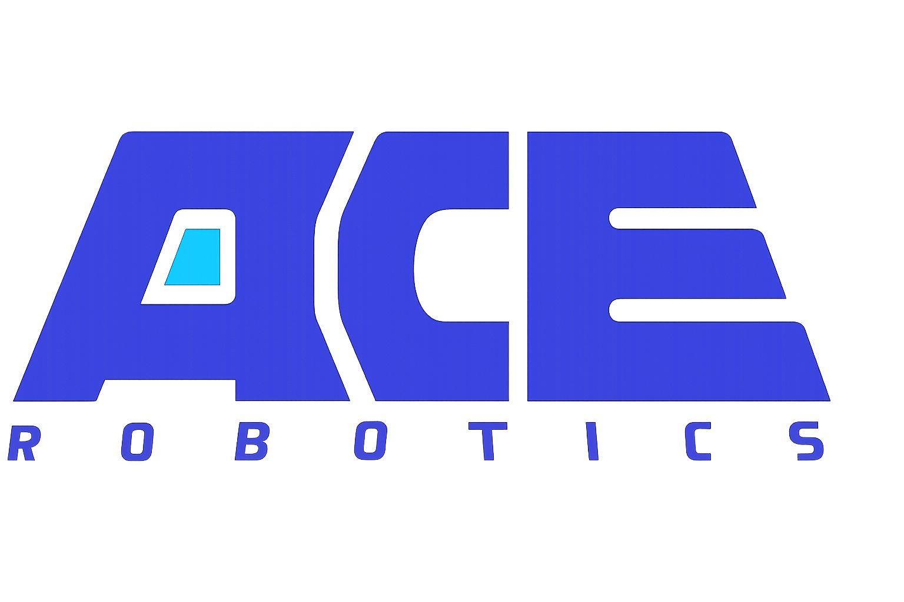

Paper Title B
Author1, Author2, Your Name, ...
一句话摘要（可选）：围绕自动驾驶场景的 XXX，我们构建了 YYY 并验证了 ZZZ。

Welcome. I am Ziyang Gong, a first-year Ph.D. student at School of Computer Science, Shanghai Jiao Tong University, co-supervised by Asst. Prof. Xue Yang and Prof. Junchi Yan (IAPR Fellow, ACM MM Co-chair, and ICML Board Member). I am currently working with ACE Robotics, where I focus on advancing Embodied Spatial Intelligence, driven by the ambition to construct a next-generation cross-embodiment foundation brain.
Before starting my Ph.D., I also worked at OpenGVLab, Shanghai AI Laboratory, where I was mentored by Asst. Prof. Xue Yang and Dr. Gen Luo, contributing to research at the intersection of embodied vision and foundation models.
I believe the future of AI not only lies in building larger models, but also in building systems that truly understand and operate in space. If you share similar curiosity about Embodied Spatial Intelligence, welcome to connect with me to explore collaborations.
